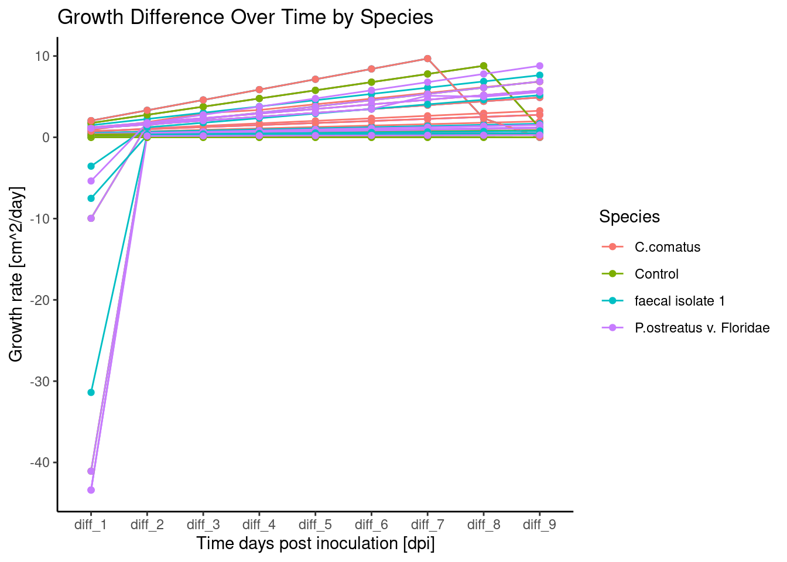
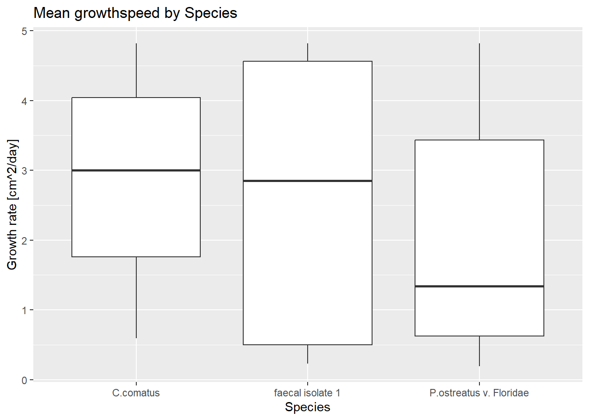
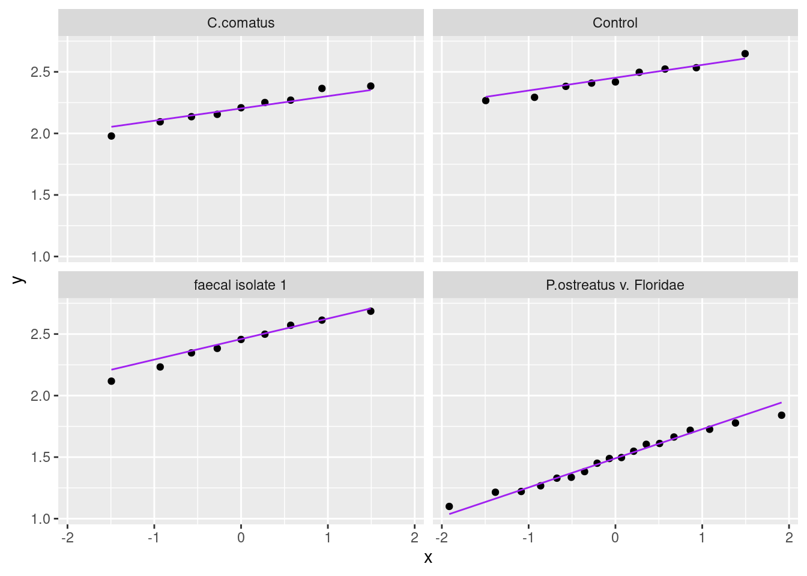
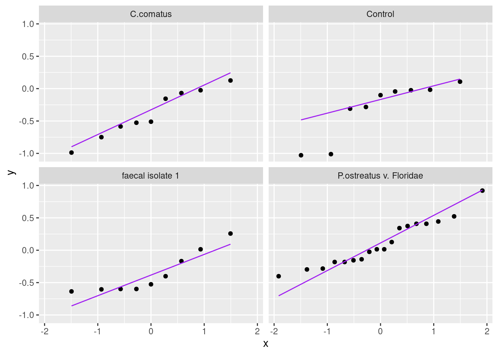

Globally, a significant portion of the population lacks access to safe sanitation, leading to the spread of diarrheal diseases and environmental contamination from untreated faecal sludge. While urine diversion dry toilets (UDDTs) offer a potential solution by separating nutrient-rich urine for fertilizer, the handling and potential pathogen reactivation in faeces remain challenges. Current practices like desiccation with additives often fail to completely eliminate pathogens, necessitating improved treatment methods.
The introduction of active microbes, specifically filamentous fungi, to sanitize faeces is a novel approach yet to be extensively studied. Fungi are powerful decomposers in nature, utilizing enzymes to break down complex organic matter. Coprophilous fungi, adapted to nutrient-rich dung, have evolved mechanisms to thrive in environments with high microbial competition. Interestingly, preliminary research indicates that even non-dung-adapted white-rot fungi can colonize human faeces and reduce odour.
This doctoral thesis aims to investigate the potential of fungal species to utilize faeces as a nutrient source, reduce the concentration of harmful bacteria, and alter the physical properties of the faecal mass. Understanding these interactions could lead to the development of fungal inoculum as an effective and sustainable method for treating faecal waste in UDDTs, thereby mitigating health risks and shortening the required storage time for safe disposal or agricultural use.
Within this lecture of rbtl the code for data cleaning and analysis will be developped and tested using a example data set with non-real data.
In order to test the capability of fungi to grow on human faeces, a petri dish based assay will be developed to measure growth speed and log-change of E. coli and Enterococcus before and after fungal over growth.
Methods
The data structure will be created in the following way
For the different task of the experiment separate tables will be generated.
faeces_1_1
Contains the data of the faecal collection creating one row of data for each faecal collection campaing.
inoculum_1_1
Stores the data for the inoculi used in the experiments.
bacterial_analysis_1_1
Contains the data about bacteria concentration after fungal co-cincubation.
growth_speed_analysis_1_1
In this table each row will refere to a area size measured by image analysis for each picture
experiments_1_1
This table will store the experimental set up linking together faeces_1_1, inoculum_1_1, bacterial_analysis_1_1 and the growth speed analysis to create tables to analyse the data of the fungal growth speed and the log_change of the bacteria
Tables will be created using google_sheets, and stored on googledrive.
A R-script for Loading the relevant data will be created and a separate one to do the data cleaning and preparation for the analysis.
Results
The following graphics have been generated using the prepared data analysis scripts.
Growth speed analysis and anova and tukey test results
This plot shows visually is showing how the growth speed is changing over the experimental time for the different tested species.
#|echo: falsetime_curve_plot <-ggplot(growth_speed_analysis_long, aes(x = time_period, y = difference, color = species, group =interaction(species, id_treatment))) +# group aesthetic needed if you have multiple replicates per species plotted directlygeom_line() +# Draw lines connecting points for each speciesgeom_point() +# Optional: Add points to show the exact data pointslabs(title ="Growth Difference Over Time by Species",x ="Time days post inoculation [dpi]",y ="Growth rate [cm^2/day]",color ="Species"# Legend title ) +theme_classic() time_curve_plot

Add test for normal distribution for growth speed data and ANOVA and Tukey test.
Mean growth speed analysis between different fungal species
#|echo: false#### calculate mean of an experimentgrowth_speed_analysis|>filter(species !="ctrl")
ggplot(growth_speed_analysis,mapping=aes(x=species, y=mean_growth_speed, fill = inoculum_age))+labs(title ="Mean growthspeed by Species",x ="Species",y ="Growth rate [cm^2/day]",color ="Species") +geom_boxplot()
Warning: The following aesthetics were dropped during statistical transformation: fill.
ℹ This can happen when ggplot fails to infer the correct grouping structure in
the data.
ℹ Did you forget to specify a `group` aesthetic or to convert a numerical
variable into a factor?

Bacterial analysis
In this section the bacteria log-change for ecoli and E. faecalis will be analysed. The log change is calculated from the original measured bacteria concentration from the faecal table and the measured value after co-incubation.
To test the collected data for normal distribution we will make a qq-plot and a shapiro test
species
variable
statistic
p
C.comatus
log_change_ecoli
0.9732321
0.9208701
Control
log_change_ecoli
0.9679897
0.8770107
P.ostreatus v. Floridae
log_change_ecoli
0.9721580
0.8371512
faecal isolate 1
log_change_ecoli
0.9763849
0.9431555

species
variable
statistic
p
C.comatus
log_change_enterococcus
0.9477965
0.66589170
Control
log_change_enterococcus
0.7822569
0.01278608
P.ostreatus v. Floridae
log_change_enterococcus
0.9361739
0.24896629
faecal isolate 1
log_change_enterococcus
0.8240756
0.03830603

Since the data in each of the categories is following a normal distribution an ANOVA and post-hoc Tukey test can be done.
Statistical analysis
#Statistical analysis for E. coli and Enterococcus###ANOVA for ecoliecoli_anova <- ecoli_log |>anova_test(log_change_ecoli ~ species) ecoli_anova|>gt()